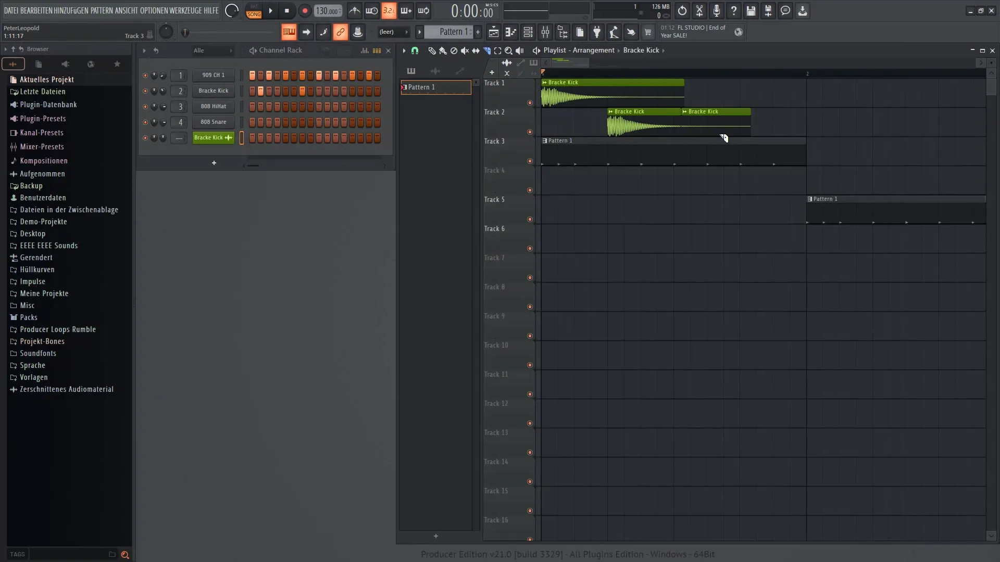

Мои Хобби
Технологии — это моя страсть, но мир намного шире. Здесь я делюсь тем, что помогает мне перезагружаться, находить вдохновение и смотреть на вещи под другим углом.

Вязание
Учусь вязанию. Это помогает мне расслабиться и сосредоточиться на процессе создания.

Музыка и FL Studio
Изучаю создание музыки в FL Studio. Экспериментирую с жанрами и техниками.

Видеомонтаж
Изучаю видеомонтаж и работу с DaVinci Resolve для создания контента.